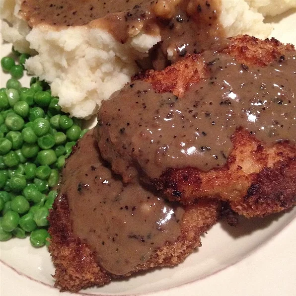

Mom's Pork Chops!

Description
This is a recipe for the all-time favorite and easy pork dinner dish, the pork chop!
Just how mom used to make it, read on ahead for the ingredients list and step-by-step guide!
Ingredients
- 2 eggs
- 1/2 teaspoon garlic poweder
- 1/2 teaspoon onion powder
- 3 packets (4oz) saltine crackers, crushed
- 3 tablespoons vegetable oil
- 6 thin cut pork chops
Steps
- Preheat oven to 375 degrees F (190 degrees C)
- In a shallow bowl or pie plate, whisk eggs with garlic powder and onion powder.
Place cracker crumbs on a separate plate. Heat the oil in a large skillet over
medium-high heat. Dip pork chops into the egg, then press in the cracker crumbs
to coat. Fry in the hot oil for 2 to 3 minutes per side, just until golden brown.
Remove to a baking sheet.
- Bake for 45 minutes in the preheated oven, turning once. Serve immediately. Enjoy!